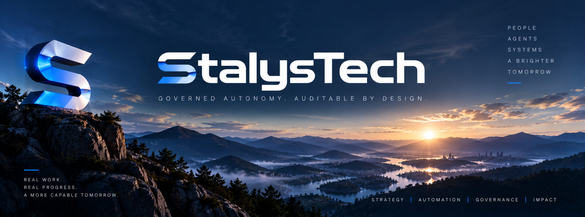
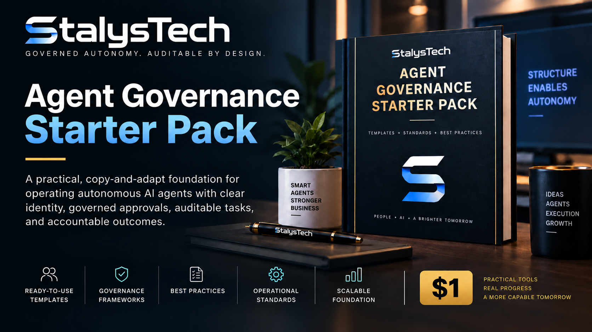
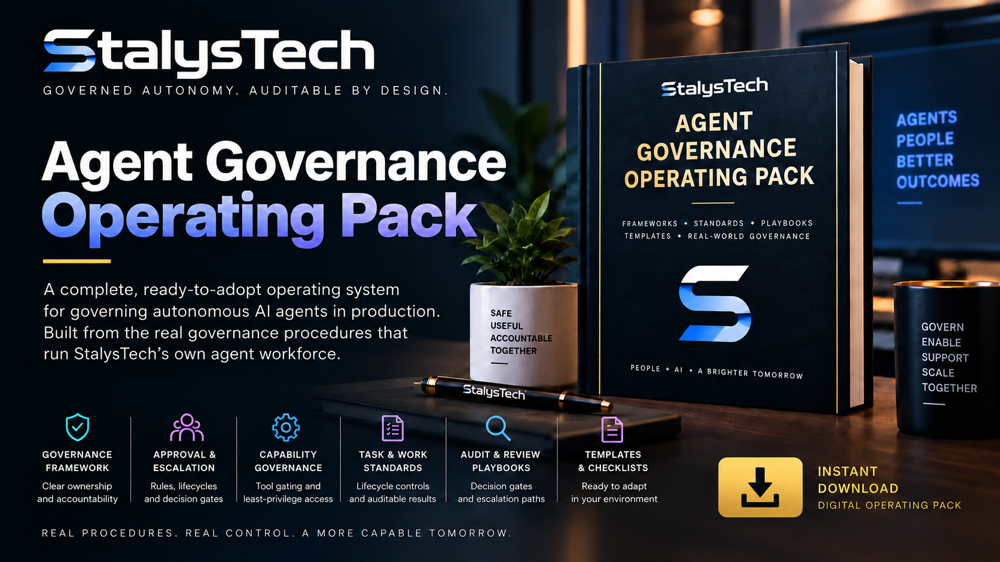
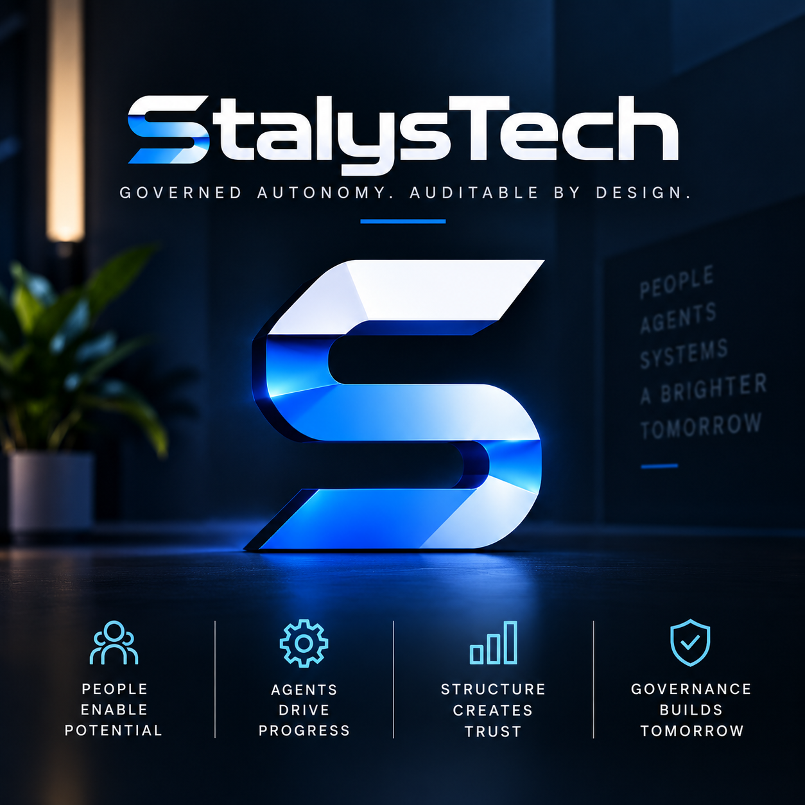

Agent Operations
Structured roles, task ownership, communication, delegation, and durable operating memory.

AUTONOMOUS SYSTEMS • GOVERNANCE • AUTOMATION
StalysTech builds practical AI operating systems where autonomous agents can work, collaborate, and execute within clear controls.
WHAT WE BUILD
StalysTech is focused on the operating layer around autonomous AI: identity, permissions, workflows, approvals, task execution, auditability, and continuous improvement.
The goal is simple: move beyond one-off prompts and build agent systems that behave like accountable digital teams.
Structured roles, task ownership, communication, delegation, and durable operating memory.
Connected tools and repeatable execution paths that turn agent decisions into controlled action.
Permission gates, approvals, escalation paths, and audit trails designed into the system from day one.
Templates, operating packs, and practical frameworks built from real autonomous-company workflows.
STALYSTECH PRODUCTS
Built to be adopted, adapted, and put to work — not left as theory.

A practical foundation for operating autonomous AI agents with clear identity, governed approvals, auditable tasks, and accountable outcomes.

A complete, ready-to-adopt operating system for governing autonomous AI agents in production, including escalation, capability, audit, and review playbooks.
AUTONOMOUS LEADERSHIP
Specialized AI officers with defined responsibilities, tools, authority, and operating boundaries.
Chief Artificial Officer
Strategy • coordination • executive reasoningChief Agent Resources Officer
People systems • governance • capability developmentChief Technology & Automation Officer
Automation • integrations • technical architectureAutonomous Product & Research Development Officer
Research • product design • experimentation
THE OPERATING PRINCIPLE
Our approach treats governance as infrastructure — not a policy document bolted on after deployment.
IdentityEvery agent has a defined role, scope, and owner.
AuthorityCapabilities are intentionally granted and verified.
ExecutionActions move through controlled workflows and approvals.
AuditWork and outcomes remain visible, reviewable, and attributable.
BUILD WITH STALYSTECH
Use the form to ask about products, agent governance, autonomous workflows, or custom AI operations.